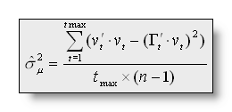
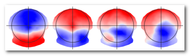
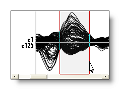
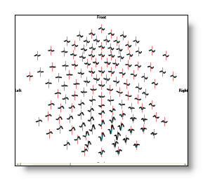

Appendix B
Cartool Slang & Various Formulas
Formulas
Data types
String regular expression
Segmentation
Tracks
Triggers, Markers & Events
Cursor
MRIs and volumes
Documents & views
OpenGL Graphic
Formulas
Let's define:
n = number of electrodes,
Uorg i = measured voltage of electrode i,
against the recording reference,
The valued vi and ui used in the following
formulas are (subtracting the average reference): and
The Global Field Power (GFP) is the standard
deviation of the data:
The Dissimilarity is the square root of the mean of the squared differences between the potentials measured at all corresponding electrodes. Since only landscape differences are of interest, the maps are first scaled to unitary strength by dividing the voltage at each electrode by the GFP: withand
The Dissimilarity ranges from 0 to 2. Diss=2 means that the two maps
are inverted, Diss=0 means that they are similar.
Dissimilarity and Global Field Power have been developed by Lehmann
& Skrandies, 1980.
The Spatial Correlation between two
maps is mathematically defined as:
The relation between Dissimilarity and correlation has been developed
by Brandeis et al., 1992. He showed that:
or
Correlation ranges from -1 to +1. C = -1 means that the two maps are
inverted, C = +1 means that they are similar.
The Explained Variance (EV) gives the amount of variance over
all electrodes of a given map that is explained by another map. It is
calculated as:
Therefor, the relation between correlation and explained variance is
the same as between the two statistical values variance and standard deviation:
or
The Global Explained Variance (GEV) is NOT
just the mean of the explained variances over a time period and is
NOT the mean correlation of the segment map in the time period. The
global explained variance is the sum of the explained variances
WEIGHTED by the Global Field Power at each moment in time:
Thus, a map that explains a short period with high GFP might have a
higher GEV than a map that explains a long time period with low GFP.
It is worth mentioning that the summation of all time frames can also
be split into contributions for each segment (in which the segment
map is constant). Then, for q segments/clusters:
The Cross Validation (CV)
for a number q of clusters is a modified version of the
predictive residual variance:
with  as the normalized vector chosen by the segmentation at time point t,
v as the vector of voltages vi, the
estimator of the noise variance being (or put simply, the error done
by the segmentation):
as the normalized vector chosen by the segmentation at time point t,
v as the vector of voltages vi, the
estimator of the noise variance being (or put simply, the error done
by the segmentation):

The value of q minimizing the cross validation is the optimal number of clusters/maps.
Data types in Cartool
Data handled in Cartool can be:
-
Scalar, positive-only values (also referred as "Positive Data")
-
Scalar, signed values
-
with Average Reference
- without Average Reference
-
-
Vectorial values
Positive-only values could be f.ex. the norms of the Results of Inverse Solution , or spikes counting of some sorts, etc... where negative values are irrelevant.
Scalar, signed values are the usual EEG data. That is, values can be whatever, positive or negative. We can further distinguish EEG data with or without Average Reference. Surface recordings (on the scalp) are always analysed with Average Reference (we don't really promote reference against a single or a set of electrodes BTW), while depth electrodes recordings are done without Average Reference.
Vectorial values are usually the Results of the Inverse Solutions, which produce 3D vectors at each solution point location. Cartool can optionally show you these vectors , but most of the time, what you see are only the norms of these vectors, as with the EEG tracks display or with all these sorts of 3D blobs . Nonetheless, the data behind are of vectorial nature.
Know which data you're working on!
Because Cartool can be parameterized for all those cases, and the results will be different if you make the wrong choices, you have to carefully select all the settings about data-type!
Fortunately for you, many of the processings now have a Presets drop-down menu (see here f.ex. ) for you to pick the right data type setting (or a very close one you can fine-tune).
On the influence on formulas
Data labeled as Positive-only values will be applied slightly different formulas. Mainly, all formulas which first step is an average reference will simply skip it . No average reference will be applied, because it has no meaning in these cases.
GFP (Global Field Power) will become a RMS (Root Mean Square), and the other formulas keep their names, like the Correlation, Dissimilarity, GEV (Global Explained Variance), etc...
String regular expressions
In a nutshell, regular expressions are a powerful way to find matches across a list of strings . It uses a special syntax that you can learn bit by bit, according to your needs, which can help you launch very powerful requests.
This is no tutorial on the subject, but just to show you a few common examples. Suppose your files have the following trigger / marker names:
EyesOpen, EyesClosed,
Trigger1, Trigger2, Trigger10, Trigger20,
GfpAbove80, GfpAbove90, GfpAbove100
And we want to Search for marker , let see some basic requests and their answers.
First, the most intuitive search is to simply give a string of characters, which will then return any marker name that contains these characters:
-
"Eyes" –> EyesOpen, EyesClosed
-
"Trig" –> Trigger1, Trigger2, Trigger10, Trigger20
-
"1" –> Trigger1, Trigger10, GfpAbove100
-
"0" –> Trigger10, Trigger20, GfpAbove80, GfpAbove90, GfpAbove100
Then we can introduce the special meaning character ".", which means "can be any character except a space":
-
"1." (a 1 followed by any character) –> Trigger10, GfpAbove100
-
"T......1" (a T followed by any 6 characters then a 1) –> Trigger1, Trigger10
Other useful special characters are "(", "|" and ")" to set a list of possible alternatives:
-
"Eyes(Open|Closed)" (Eyes then either Open or Closed) –> EyesOpen, EyesClosed
-
"Trigger(1|20)" –> Trigger1, Trigger20
-
"Above(90|100)" –> GfpAbove90, GfpAbove100
Segmentation
Map: the 2D / 3D visual representation of the EEG potentials at a given time point:
But a map is actually only a...
Vector of values (e1, e2, e3, ..., en), for n electrodes.
Segment: a set of maps which have been said to belong to the same group. To identify the segments, we use a...
Labeling: simply a numbering for each time point, telling to which segment it has been assigned. F.ex. 1,1,1,2,2,3,3,3,3... first segment: the 3 first time points, second segment: time points 4 & 5... Graphically rendered, with time as horizontal axis, and one color per segment:
Cluster: another name for a segment, but seen from the clustering algorithm point of view. A set of vectors that have been grouped together.
Templates (landscape maps): the set of n synthetic maps produced by the segmentation that will best represent the data. Also called centroids, they are usually computed as the average of a set of maps. See here f.ex. the 4 template maps given by 4 segments:

See also the Segmentation & Fitting page.
Tracks
Tracks: (or channels, or regular tracks) The display representation of the electrodes' recordings in time.
Auxiliary tracks: The tracks of the auxiliary electrodes (like ECG, EOG...), plotted in light blue.
Bad tracks: Tracks (usually regular tracks, but auxiliaries are also possible) that have been set as bad by the user. F.ex. noisy, meaningless tracks. The bad tracks are excluded from the computed tracks process, and are plotted in light transparent red.
Computed tracks: These are not recorded tracks, but are computed on-line by Cartool, and will appear separately at the bottom of the Eeg display in blue. Presently computed tracks are: GFP, Dissimilarity and Average. Any change on the data, like filtering or setting some tracks as bad will affect the computation, which can be seen in real-time.
From top to down, the regular tracks, some auxiliary tracks, then two computed tracks:
Triggers, Markers & Events
Trigger: a trigger is a flag already contained
in
the original Eeg file
, usually sent by the stimulation machine
when a given event occured (stimuli presentation f.ex.). The
user can hide the triggers, but can not delete nor modify them. F.ex.
here triggers 1 and 2 were sent when reversing a checkerboard on the screen:
Events: in some cases, the recorded file can also contain events sent by the stimulation machine, but which are not triggers by themselves (ie not synchronized to the stimuli presentation). For example initialization events, subject responses from the keypad, reaction times, etc... They too can not be deleted.
Marker: a marker is a user defined
flag manually set in the Eeg, with any description attached to it.
The user can add and delete them as needed, and even generate them
through computation (see Markers menu
). They are written in an external file (see .mrk
file format
). F.ex. here two markers were added:
Epoch: a small time interval of an EEG. It consists in an origin and two intervals, one before and one after its origin. The origin is usually a trigger from an experiment, and the whole duration will give the size if the ERP computed.
There is rarely a single epoch to be considered, but rather a whole serie of them.
ERP: Evoked Response Potentials (in case you don't know).
Cursor
Cursor: the current position in the Eeg, shown in red. Usually
it is a single time frame in the Eeg:

Extended cursor: the cursor can extend to many time frames.
This period of time can be used for averages, or time sequences for
the display:

Frequency cursor: a cursor to select some frequency range,
show in blue. This applies only to frequency files:

Time frame: (or time point) while recording the Eeg, each sample is numbered, starting from 0 to N-1, N being the total number of samples. It is therefor an index in the acquisition sequence, but not the time (in milliseconds/seconds/minutes) itself.
Sampling frequency: the number of samples per second of the Eeg values. This value makes possible to translate from time frames to milliseconds, which is more understanble and mandatory for some processings (filters f.ex.).
MRIs and volumes
Isosurface: a mathematical surface
which cuts through a volume at a constant value. An isosurface
is simply defined by this constant value, telling at which "grey
level" the volume is to be cut.
Simply put, it is like a hollow veil molded around a volume (the data
at a given value).
The now classical Marching Cube algorithm is used, with collapsed
triangles decimation only. Also, the data are Gaussian filtered
before the process, to remove small artifacts, to give a smoother
surface and less triangles.
Voxel: a volume element (derived from pixel, picture element, that's for the 'x'), the smallest part that can be accessed in a full volume. Voxels are usually indexed by 3 coordinates, as they are in 3 dimensions, but these indexes may not have the meaning of X, Y and Z, or whatever you expect them to be...
Documents and Views
Documents: the actual data read from file are put in a Document. Documents are only numbers in memory, you can't see them. For this purpose, views are attached to them.
Views: to see the data, you need at least one view, but you can add as many views as you want, all reflecting the current data from its Document. Views can be of different types, to allow various explorations or analysis. These types are most of the time context sensitive.
F.ex. a document with Eeg contents (= simply a matrix of numbers), with 3 views attached at the same time, one view with all 2D Eeg tracks superimposed, one view with 3D Eeg tracks, one view with a 2D interpolated color rendering of a given time frame:
Document
____
|
Views
OpenGL Graphic
®
OpenGL is a standard and very powerful graphic library for 3D rendering, first developped by Silicon Graphics, then transferred to other platforms. OpenGL is evolving, so it has a version number associated with it. Cartool right now is compatible with version 1.1 and higher.
It is nearly mandatory to have a graphic cards that will accelerate OpenGL operations to have decent performance. Though you can theoretically work without... but I warned you.
See www.opengl.org for more informations.